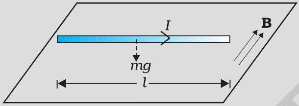
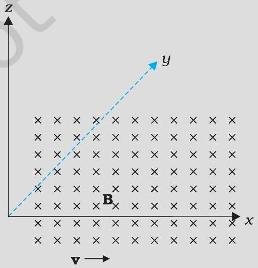
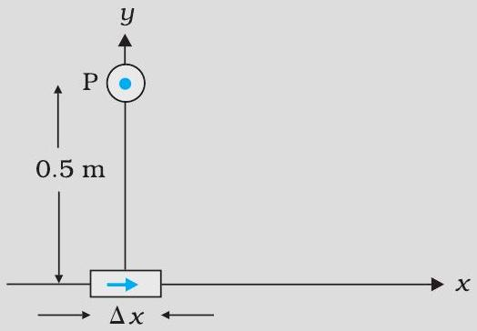
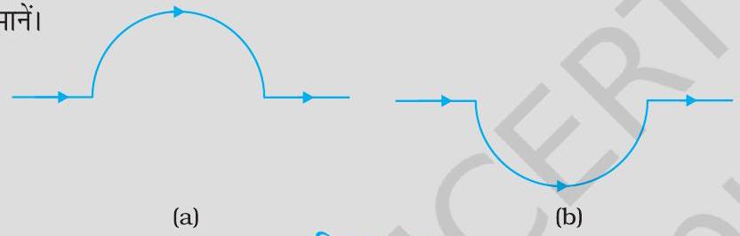
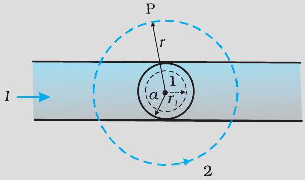
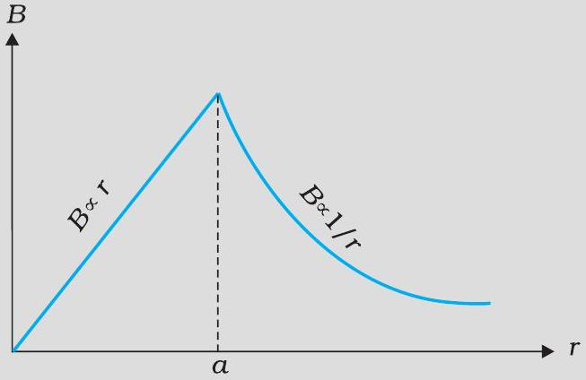
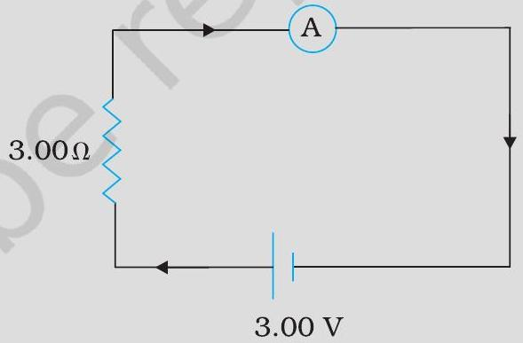

200 g द्रव्यमान तथा 1.5 m लंबाई के किसी सीधे तार से 2 A विद्युत धारा प्रवाहित हो रही है। यह किसी एकसमान क्षैतिज B चुंबकीय क्षेत्र द्वारा वायु के बीच में निलंबित है (चित्र 4.3)। चुंबकीय क्षेत्र का परिमाण ज्ञात कीजिए।

यदि चुंबकीय क्षेत्र धनात्मक y-अक्ष के समान्तर है तथा आवेशित कण धनात्मक x-अक्ष के अनुदिश गतिमान है (चित्र 4.4 देखिए), तो लोरेंज बल किस ओर लगेगा जबकि गतिमान कण

इलेक्ट्रॉन (ऋण आवेश) है।
प्रोटॉन (धन आवेश) है।
6 × 10⁻⁴ T के चुंबकीय क्षेत्र के लंबवत 3 × 10⁷ m / s की चाल से गतिमान किसी इलेक्ट्रॉन (द्रव्यमान 9 × 10⁻³¹ kg तथा आवेश 1.6 × 10⁻¹⁹ C ) के पथ की त्रिज्या क्या है? इसकी क्या आवृत्ति होगी? इसकी ऊर्जा KeV में परिकलित कीजिए। (1 eV = 1.6 × 10⁻¹⁹ J)
कोई विद्युत धारा अवयव Δ l = Δ x î जिससे एक उच्च धारा I = 10 A प्रवाहित हो रही है, मूल बिंदु पर स्थित है (चित्र 4.8), y-अक्ष पर 0.5 m दूरी पर स्थित किसी बिंदु पर इसके कारण चुंबकीय क्षेत्र का क्या मान है। Δ x = 1 cm

चित्र 4.11 में दर्शाए अनुसार किसी सीधे तार जिसमें 12 A विद्युत धारा प्रवाहित हो रही है, को 2.0 cm त्रिज्या के अर्धवृत्ताकार चाप में मोड़ा गया है। इस चाप के केंद्र पर चुंबकीय क्षेत्र B को मानें।

सीधे खंडों के कारण चुंबकीय क्षेत्र कितना है?
किस रूप में अर्धवृत्त द्वारा B को दिया गया योगदान वृत्ताकार पाश के योगदान से भिन्न है और किस रूप में ये एक दूसरे के समान हैं।
क्या आपके उत्तर में कोई परिवर्तन होगा यदि तार को उसी त्रिज्या के अर्धवृत्त में पहले की तुलना में चित्र 4.11 (b) में दर्शाए अनुसार उलटी दिशा में मोड़ दें।
10 cm त्रिज्या की 100 कसकर लपेटे गए फेरों की किसी ऐसी कुंडली पर विचार कीजिए जिससे 1 A विद्युत धारा प्रवाहित हो रही है। कुंडली के केंद्र पर चुंबकीय क्षेत्र का परिमाण क्या है?
चित्र 4.13 में एक लंबा सीधा वृत्ताकार अनुप्रस्थ काट का (जिसकी त्रिज्या a है) विद्युत धारावाही तार जिससे स्थायी विद्युत धारा I प्रवाहित हो रही हो, दर्शाया गया है। स्थायी विद्युत धारा इस अनुप्रस्थ काट पर एकसमान रूप से वितरित है। क्षेत्रों r<a तथा r>a में चुंबकीय क्षेत्र परिकलित कीजिए


कोई परिनालिका जिसकी लंबाई 0.5 m तथा त्रिज्या 1 cm है, में 500 फेरे हैं। इसमें 5 A विद्युत धारा प्रवाहित हो रही है। परिनालिका के भीतर चुंबकीय क्षेत्र का परिमाण क्या है?
किसी निर्धारित स्थान पर पृथ्वी के चुंबकीय क्षेत्र का क्षैतिज घटक 3.0 × 10⁻⁵ T है, तथा इस क्षेत्र की दिशा भौगोलिक दक्षिण से भौगोलिक उत्तर की ओर है। किसी अत्यधिक लंबे सीधे चालक से 1 A की अपरिवर्ती धारा प्रवाहित हो रही है। जब यह तार किसी क्षैतिज मेज़ पर रखा है तथा विद्युत धारा के प्रवाह की दिशाएँ (a) पूर्व से पश्चिम की ओर; (b) दक्षिण से उत्तर की ओर हैं तो तार की प्रत्येक एकांक लंबाई पर बल कितना है?
विद्युत धारा के प्रवाह की दिशा पूर्व से पश्चिम की ओर है।
विद्युत धारा के प्रवाह की दिशा दक्षिण से उत्तर की ओर है।
10 cm त्रिज्या की किसी कुंडली जिसमें पास-पास सटे 100 फेरे हैं, में 3.2 A विद्युत धारा प्रवाहित हो रही है।
कुंडली के केंद्र पर चुंबकीय क्षेत्र कितना है?
इस कुंडली का चुंबकीय आघूर्ण क्या है?
यह कुंडली ऊर्ध्वाधर तल में रखी है तथा किसी क्षैतिज अक्ष जो उसके व्यास से संरेखित है, के परितः घूर्णन करने के लिए स्वतंत्र है। एक 2 T का एकसमान चुंबकीय क्षेत्र क्षैतिज दिशा में है जो इस प्रकार है कि आरंभ में कुंडली का अक्ष चुंबकीय क्षेत्र की दिशा में है। चुंबकीय क्षेत्र के प्रभाव में कुंडली 90° के कोण पर घूर्णन कर जाती है। आरंभिक तथा अंतिम स्थिति में कुंडली पर बल आघूर्ण के परिमाण क्या हैं?
90° पर घूर्णन करने के पश्चात कुंडली द्वारा अर्जित कोणीय चाल कितनी है? कुंडली का जड़त्व आघूर्ण 0.1 kg m² है।
किसी चिकने क्षैतिज तल पर कोई विद्युत धारावाही वृत्ताकार पाश रखा है। क्या इस पाश के चारों ओर ऐसा चुंबकीय क्षेत्र स्थापित किया जा सकता है कि यह पाश अपने अक्ष के चारों ओर स्वयं चक्कर लगाए (अर्थात ऊर्ध्वाधर अक्ष के चारों ओर)।
कोई विद्युत वाही वृत्ताकार पाश किसी एकसमान बाह्य चुंबकीय क्षेत्र में स्थित है। यदि यह पाश घूमने के लिए स्वतंत्र है, तो इसके स्थायी संतुलन का दिक्विन्यास क्या होगा। यह दर्शाइए कि इसमें कुल क्षेत्र (बाह्य क्षेत्र + पाश द्वारा उत्पन्न क्षेत्र) का फ्लक्स अधिकतम होगा।
अनियमित आकृति का कोई विद्युत धारावाही पाश किसी बाह्य चुंबकीय क्षेत्र में स्थित है। यदि तार लचीला है तो यह वृत्ताकार आकृति क्यों ग्रहण कर लेता है?
नीचे दिखाए गए परिपथ में धारा का मान क्या है यदि दिखाया गया ऐमीटर,

RG = 60.00 Ω प्रतिरोध का गैल्वेनोमीटर है।
भाग (a) में बताया गया गैल्वेनोमीटर ही है परंतु इसको rs = 0.02 Ω का शंट प्रतिरोध लगाकर ऐमीटर में परिवर्तित किया गया है।
शून्य प्रतिरोध का एक आदर्श ऐमीटर है।
तार की एक वृत्ताकार कुंडली में 100 फेरे हैं, प्रत्येक की त्रिज्या 8.0 cm है और इनमें 0.40 A विद्युत धारा प्रवाहित हो रही है। कुंडली के केंद्र पर चुंबकीय क्षेत्र का परिमाण क्या है?
एक लंबे, सीधे तार में 35 A विद्युत धारा प्रवाहित हो रही है। तार से 20 cm दूरी पर स्थित किसी बिंदु पर चुंबकीय क्षेत्र का परिमाण क्या है?
क्षैतिज तल में रखे एक लंबे सीधे तार में 50 A विद्युत धारा उत्तर से दक्षिण की ओर प्रवाहित हो रही है। तार के पूर्व में 2.5 m दूरी पर स्थित किसी बिंदु पर चुंबकीय क्षेत्र B का परिमाण और उसकी दिशा ज्ञात कीजिए।
व्योमस्थ खिंचे क्षैतिज बिजली के तार में 90 A विद्युत धारा पूर्व से पश्चिम की ओर प्रवाहित हो रही है। तार के 1.5 m नीचे विद्युत धारा के कारण उत्पन्न चुंबकीय क्षेत्र का परिमाण और दिशा क्या है?
एक तार जिसमें 8 A विद्युत धारा प्रवाहित हो रही है, 0.15 T के एकसमान चुंबकीय क्षेत्र में, क्षेत्र से 30° का कोण बनाते हुए रखा है। इसकी एकांक लंबाई पर लगने वाले बल का परिमाण और इसकी दिशा क्या है?
एक 3.0 cm लंबा तार जिसमें 10 A विद्युत धारा प्रवाहित हो रही है, एक परिनालिका के भीतर उसके अक्ष के लंबवत रखा है। परिनालिका के भीतर चुंबकीय क्षेत्र का मान 0.27 T है। तार पर लगने वाला चुंबकीय बल क्या है।
एक-दूसरे से 4.0 cm की दूरी पर रखे दो लंबे, सीधे, समांतर तारों A एवं B से क्रमश: 8.0 A एवं 5.0 A की विद्युत धाराएँ एक ही दिशा में प्रवाहित हो रही हैं। तार A के 10 cm खंड पर बल का आकलन कीजिए।
पास-पास फेरों वाली एक परिनालिका 80 cm लंबी है और इसमें 5 परतें हैं जिनमें से प्रत्येक में 400 फेरे हैं। परिनालिका का व्यास 1.8 cm है। यदि इसमें 8.0 A विद्युत धारा प्रवाहित हो रही है तो परिनालिका के भीतर केंद्र के पास चुंबकीय क्षेत्र B के परिमाण परिकलित कीजिए।
एक वर्गाकार कुंडली जिसकी प्रत्येक भुजा 10 cm है, में 20 फेरे हैं और उसमें 12 A विद्युत धारा प्रवाहित हो रही है। कुंडली ऊर्ध्वाधरतः लटकी हुई है और इसके तल पर खींचा गया अभिलंब 0.80 T के एकसमान चुंबकीय क्षेत्र की दिशा से 30° का एक कोण बनाता है। कुंडली पर लगने वाले बलयुग्म आघूर्ण का परिमाण क्या है?
दो चल कुंडली गैल्वेनोमीटर मीटरों M1 एवं M2 के विवरण नीचे दिए गए हैं : R1 = 10 Ω, N1 = 30 A1 = 3.6 × 10⁻³ m², B1 = 0.25 T R2 = 14 Ω, N2 = 42 A2 = 1.8 × 10⁻³ m², B2 = 0.50 T (दोनों मीटरों के लिए स्प्रिंग नियतांक समान हैं)।
M2 एवं M1 की धारा-सुग्राहिताओं का अनुपात ज्ञात कीजिए।
M2 एवं M1 की वोल्टता-सुग्राहिताओं का अनुपात ज्ञात कीजिए।
एक प्रकोष्ठ में 6.5 G(1 G = 10⁻⁴ T) का एकसमान चुंबकीय क्षेत्र बनाए रखा गया है। इस चुंबकीय क्षेत्र में एक इलेक्ट्रॉन 4.8 × 10⁶ m s⁻¹ के वेग से क्षेत्र के लंबवत भेजा गया है। व्याख्या कीजिए कि इस इलेक्ट्रॉन का पथ वृत्ताकार क्यों होगा? वृत्ताकार कक्षा की त्रिज्या ज्ञात कीजिए। (e = 1.6 × 10⁻¹⁹ C, me = 9.1 × 10⁻³¹ kg)
प्रश्न 4.11 में, वृत्ताकार कक्षा में इलेक्ट्रॉन की परिक्रमण आवृत्ति प्राप्त कीजिए। क्या यह उत्तर इलेक्ट्रॉन के वेग पर निर्भर करता है? व्याख्या कीजिए।
30 फेरों वाली एक वृत्ताकार कुंडली जिसकी त्रिज्या 8.0 cm है और जिसमें 6.0 A विद्युत धारा प्रवाहित हो रही है, 1.0 T के एकसमान क्षैतिज चुंबकीय क्षेत्र में ऊर्ध्वाधरतः लटकी है। क्षेत्र रेखाएँ कुंडली के अभिलंब से 60° का कोण बनाती हैं। कुंडली को घूमने से रोकने के लिए जो प्रतिआघूर्ण लगाया जाना चाहिए उसके परिमाण परिकलित कीजिए।
यदि (a) में बतायी गई वृत्ताकार कुंडली को उसी क्षेत्रफल की अनियमित आकृति की समतलीय कुंडली से प्रतिस्थापित कर दिया जाए ( शेष सभी विवरण अपरिवर्तित रहें) तो क्या आपका उत्तर परिवर्तित हो जाएगा?